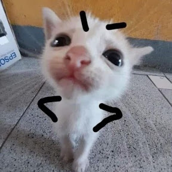
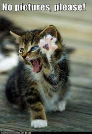
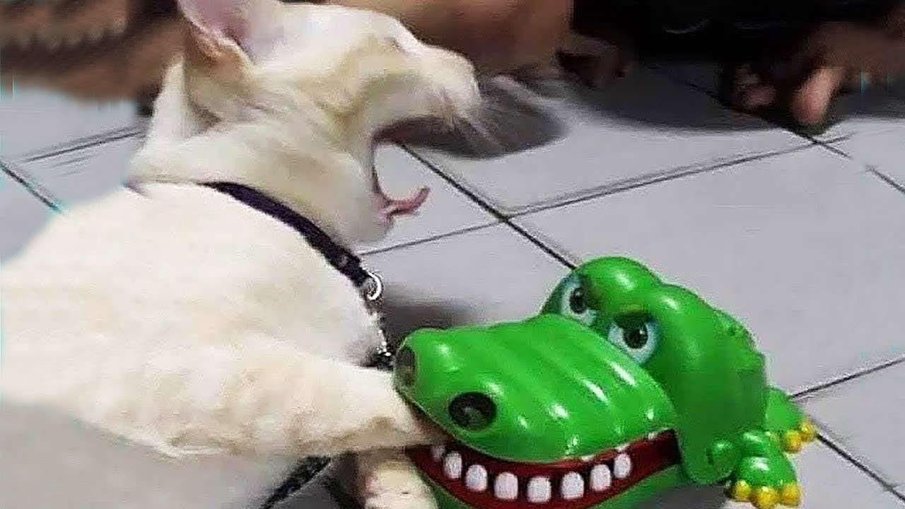
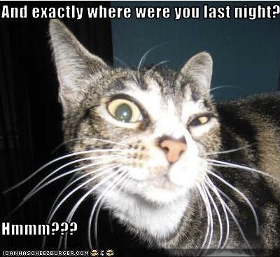

happymango are the cats,cat are the best and fun to play weth they are the funny cat you can have the cats iove u cat like to play alot and eta a alot they love fish they can jump 5 times
   
As kittens they have 26 deciduous, or “baby”, teeth. ... House cats share 95.6% of their genetic makeup with tigers. ... Cats can jump 5 times their own height. ... A housecat can run to the speed of about 30 mph over short distances.